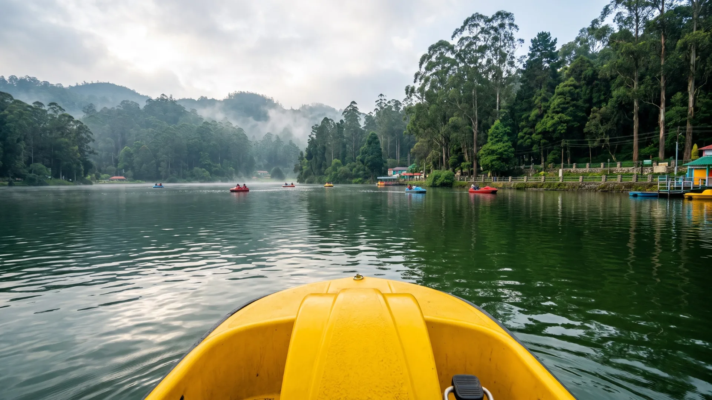

Kodaikanal · Berijam Lake Tour
Kodaikanal Berijam Lake Tour: Permit-Only Forest Drive
A permit-only forest drive through pine and shola forest to Kodaikanal's quieter reservoir lake — a private cab route for a slower, less-crowded day out.
Free quoteReply within hoursPrivate cab, not shared
Forest permit coordinated as part of your booking
One dedicated vehicle for the forest drive
A far less-crowded alternative to Kodaikanal Lake
Personalised pricing back within hours
Tour highlights
Tour Highlights of the Berijam Lake Tour
In short: Berijam Lake is a reservoir inside Kodaikanal's reserve forest that can only be visited with a Forest Department permit. This is a roughly 5-hour early-morning private-cab tour (06:30 AM to 11:30 AM) for couples, families and small groups who want a quieter alternative to Kodaikanal Lake. We coordinate the permit, subject to daily availability.
The stops and viewpoints this tour package covers.
- 01Salient Valley
- 02Green Mountain View
- 03Fire Tower
- 04Medicine Forest
- 05Cap’s Fly Valley
- 06Berijam Lake View
- 07Berijam Lake
The tour
Berijam Lake Permit & Cab Included in Your Booking
Berijam Lake sits inside reserve forest with capped daily entries — this tour bundles the Berijam Lake permit booking and the drive into one booking. Need a stay too? Browse cottages in Kodaikanal or plan how to reach Kodaikanal.
- 01
Private Transportation
A dedicated cab for the full forest drive — no sharing with strangers.
- 02
Berijam Lake Permit Booking
We coordinate the Forest Department permit, subject to daily availability.
- 03
Local Driver-Guide
Someone who knows the forest checkpoints and the route timing.
- 04
Early Departure
Timed to reach the checkpoint before the daily permit quota fills.
- 05
Parking & Tolls
Applicable parking, toll and driver charges included as per tour terms.
- 06
Local Coordination
One point of contact for the route, permit and pickup.
The route
Berijam Lake Route
An early-start forest drive through pine and shola forest, checkpoint permit, and time at the reservoir before the return.
Forest Drive · Berijam Lake
Permit Route- 106:30 AM
Early Pickup
An early start to reach the forest checkpoint before the daily permit quota fills.
- 207:15 AM
Forest Checkpoint
Permit verification at the Forest Department checkpoint before entering the reserve.
- 307:45 AM
Pine & Shola Forest Drive
A quiet drive through dense pine plantations and native shola forest.
- 408:45 AM
Berijam Lake
Time at the reservoir itself — a quieter, less-visited alternative to Kodaikanal Lake.
- 510:30 AM
Return Drive
The same forest route back out through the checkpoint.
- 611:30 AM
Drop-off
Return to your pickup point, with the rest of the day free.
Entry is subject to daily Forest Department permit availability and forest access conditions on the day. For official permit queries, see the Tamil Nadu Forest Department website.
Like this route? Get your price today
Send your date and group size. We confirm the cab and a fixed fare, usually within a few hours.
- Free quote, no obligation
- One private vehicle for your group
- Pickup from your hotel
Destinations
What You'll See on This Drive
Berijam Lake anchors the route, reached through a forest drive most day-trippers never take. Prefer a town-side day instead? See the places to visit in Kodaikanal.


Tour Package Rates
Berijam Lake Tour Booking Rates by Vehicle
Indicative per-vehicle rates below — this route isn't on our standard rate card since it depends on daily forest permit availability. Confirm exact pricing on WhatsApp.
Rates depend on permit availability and vehicle type — we confirm exact pricing once your travel date is checked against the daily forest quota. Rates shown were last checked on 29 October 2026 and are per vehicle.
Good to know
What's Not Included
Exact inclusions and exclusions may vary by selected tour option.
- Breakfast
- Forest permit fee (billed at cost)
- Personal expenses
- Accommodation
- Optional activities
- Services outside the tour
Booking
How to Book Berijam Lake Permit & Tour Online
Four simple steps for your Berijam Lake online booking — permit availability is checked first since it caps how many vehicles can go each day.
- Share Your DateWe check permit availability for that day first.
- Confirm the CabVehicle type and group size confirmed alongside the permit.
- Get Your Berijam Lake Booking QuotePricing confirmed once permit and vehicle are locked in.
- Early Start, Quiet LakeAn early pickup and a forest drive most visitors skip.
Questions
Berijam Lake Booking & Permit FAQs
Quick answers about Berijam Lake booking, the permit and the Kodaikanal Berijam Lake Tour. Anything else? Message us on WhatsApp.
Booking & Permit
Send your travel date and group size on WhatsApp or the enquiry form. We check permit availability, confirm the cab and send your Berijam Lake booking quote, usually within a few hours.
Book the tour with us and we coordinate the Forest Department permit for your date, subject to daily availability. The permit fee is billed at cost.
It sits inside reserve forest, so the Forest Department caps how many vehicles can enter each day.
Yes — permit coordination is part of the booking, subject to daily availability.
Logistics
Daily permits are limited and are checked at the forest checkpoint on a first-come basis.
Yes, the tour is built around private cab travel. Confirm vehicle type and capacity while booking.
Booking
We check permit and vehicle availability and usually send pricing within a few hours of your enquiry.
Yes — see the full range of featured tours and ready-made packages on the Travels in Kodaikanal hub page, or compare this with our Kodaikanal jeep safari and valley tour.
Plan Your Berijam Lake Tour
A permit-only forest drive to Kodaikanal's quietest reservoir — one private cab, one simple booking.